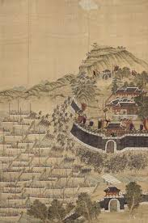

임진왜란·정유재란
"동아시아 3국의 국제 대전, 조선의 끈질긴 저항으로 불패의 망상을 꺾다."

- 정의: 도요토미 히데요시가 이끄는 일본군이 명나라 침략을 명분으로 조선을 침공하여, 조선·명나라·일본 삼국이 한반도에서 맞붙은 대규모 국제 전쟁.
- 주요 인물: 선조, 광해군, 이순신, 권율, 곽재우(조선) / 도요토미 히데요시, 고니시 유키나가, 가토 기요마사(일본) / 이여송, 심유경(명)
- 기간: 1592년 ~ 1598년
1. 전쟁의 배경과 초기 패전 (1592년)
- 일본의 야망: 전국시대를 통일한 도요토미 히데요시가 대륙 침략의 망상을 품고 쓰시마섬 도주를 통해 조선에 복속 및 명나라 침공의 길잡이가 될 것을 요구함.
- 조선의 대응: 1590년 통신사(황윤길, 김성일)를 파견했으나 침략 가능성에 대해 의견이 나뉨. 소극적인 방비에 그쳐 일본 전체의 국력을 동원한 전면전을 예측하지 못함.
- 초기 참패와 선조의 피난: 1592년 4월 13일 고니시 등의 선봉군이 부산에 상륙. 정발(부산진), 송상현(동래)이 전사하고 신립의 탄금대 배수진마저 무너지자 선조는 수도 한성을 버리고 의주로 피난함(명나라 망명 시도). 광해군은 세자로서 분조(分朝)를 이끌며 의병 봉기를 촉구함.
2. 전세의 역전: 수군, 의병, 그리고 명군의 참전
- 거북선과 판옥선을 앞세운 이순신의 탁월한 전술로 일본 수군을 연전연패시킴.
- 한산도 대첩: 일본 수군을 대파하여 전라도 곡창지대 진출을 차단하고, 해로를 통한 일본군의 보급로를 완벽하게 끊어놓음. 히데요시는 해전 기피 명령을 내림.
- 의병 봉기: 곽재우, 고경명, 조헌, 정문부 등 사대부들과 휴정(서산대사), 유정(사명대사) 등 승병들이 게릴라 전술로 일본군을 괴롭힘.
- 관군의 승리: 김시민의 제1차 진주성 전투, 권율의 행주산성 전투로 일본군의 진격을 저지함.
- 조선의 구원 요청에 명나라는 이여송의 대군을 파견하여 평양성을 탈환함.
- 그러나 한성으로 진격하던 명군이 벽제관 전투에서 패한 후, 전의를 잃고 강화교섭 노선으로 선회함.
이순신의 수군 활약 (남해 제해권 장악)
전국적인 의병 및 관군의 항전
명나라 군대의 참전과 벽제관 전투
3. 지루한 강화교섭과 군제 정비 (1593 ~ 1596)
- 왜곡된 교섭: 명의 심유경과 일본의 고니시 주도로 교섭이 진행되었으나, 명은 일본의 철수를 원했고 히데요시는 조선 영토 할양 등을 요구하여 애초에 협상이 불가능했음(두 담당자가 본국을 속임). 조선은 배제된 교섭에 분노함.
- 조선의 체제 정비: 명나라 병서 《기효신서》를 도입해 포수·사수·살수의 '삼수병' 기법을 고안하고, 수도 방위를 위한 훈련도감 설치 및 지방군의 속오법 편제를 단행함.
4. 정유재란과 전쟁의 종결 (1597 ~ 1598)
- 정유재란 (1597년): 외교 속임수를 알게 된 히데요시가 재침을 명령함. 조선과 명군의 대비로 직산 전투 이후 일본군은 남부 해안가로 퇴각하여 왜성을 쌓고 장기전에 돌입함. (조선인의 코와 귀를 베어가는 만행을 저지름).
- 명량해전과 울산성 전투: 삼도수군통제사로 복귀한 이순신이 명량해전에서 기적적인 승리를 거두며 다시 해상 주도권을 잡음. 조·명 연합군은 울산성 전투 등에서 일본군을 강하게 압박함.
- 히데요시의 사망과 노량해전 (1598년): 1598년 8월 도요토미 히데요시가 사망하자 일본군은 철수를 시작함. 이순신은 명군 일각의 묵인 속에서 도망치려는 일본군을 끝까지 추격하여 노량해전에서 대승을 거두고 전사함. 이후 일본군이 완전히 철수하며 전쟁 종결.
5. 전쟁이 남긴 막대한 피해와 영향
- 조선의 황폐화: 전 국토의 농토가 황폐해져 대기근이 발생했고, 경복궁, 종묘, 불국사 등 귀중한 문화재들이 불타 소실됨. 수많은 실록과 사초 등의 문서가 사라짐.
- 역사의 기록: 유성룡은 전쟁의 참상을 반성하고 후세를 경계하기 위해 《징비록》을 집필함.
- 동아시아 정세 변화: 조선은 사회·정치적 대전환기를 맞이했고, 명나라는 국력 소모로 쇠퇴하여 여진족(청나라)이 성장하는 계기가 됨. 일본은 정권이 교체되어 도쿠가와 이에야스의 에도 막부가 들어섬.